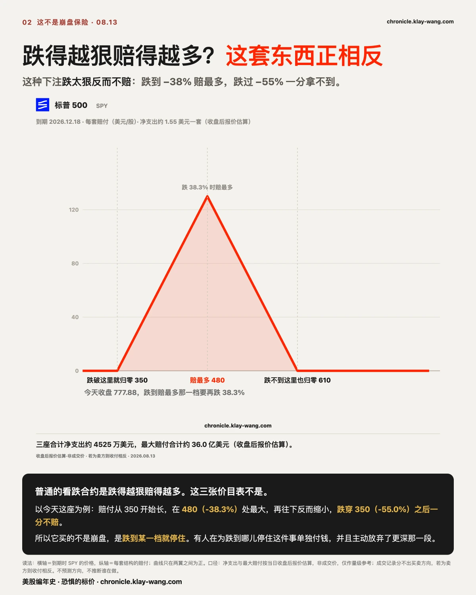
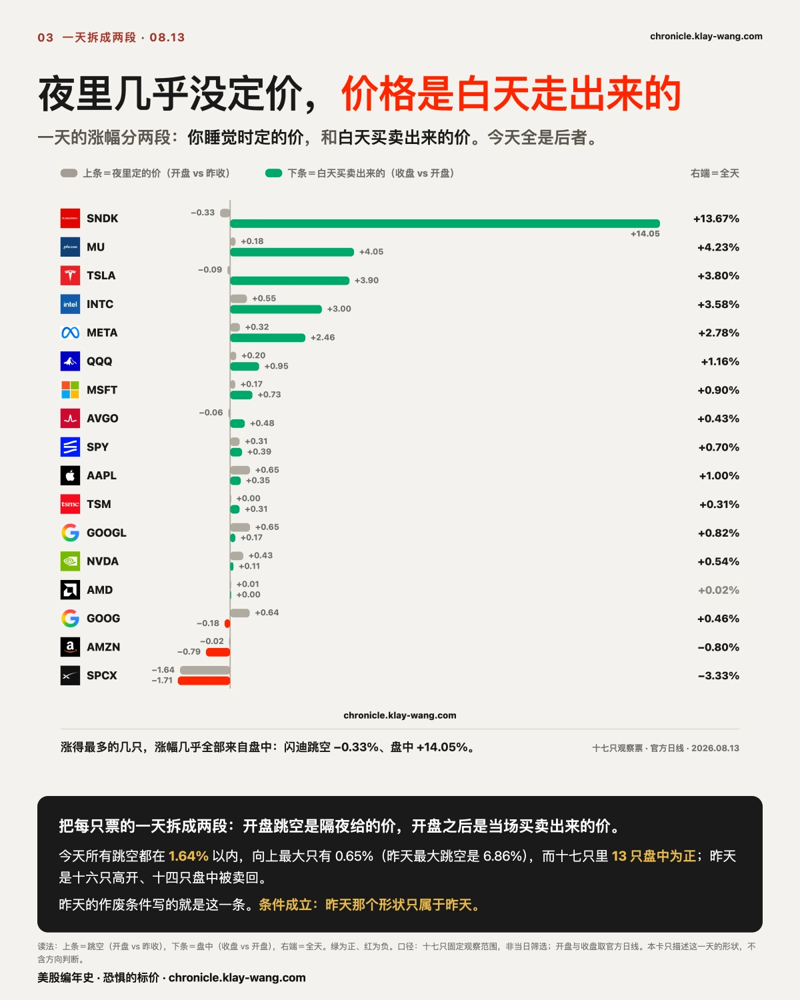
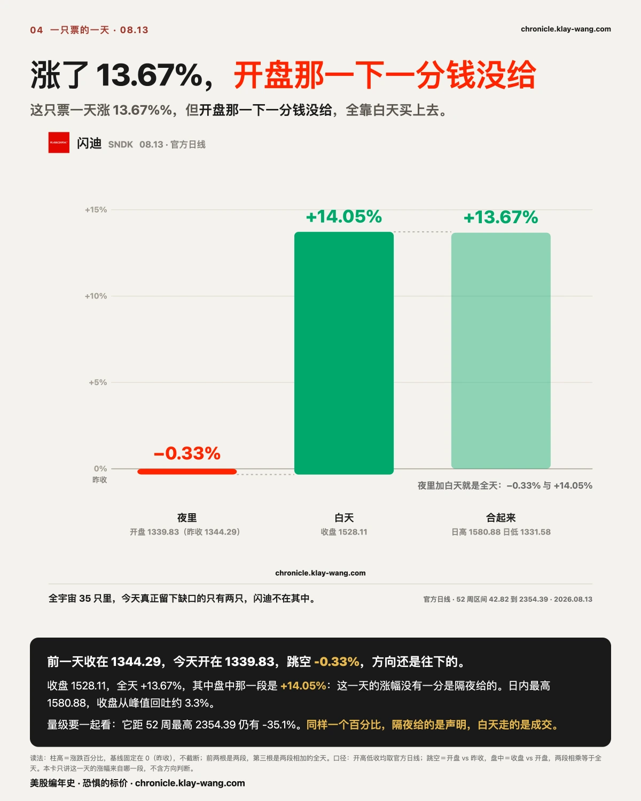
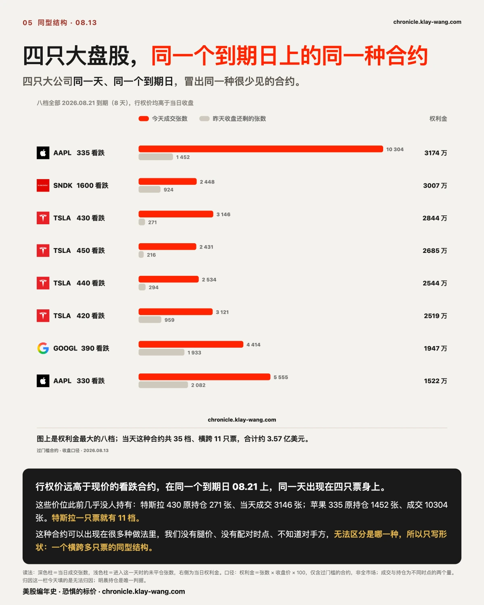
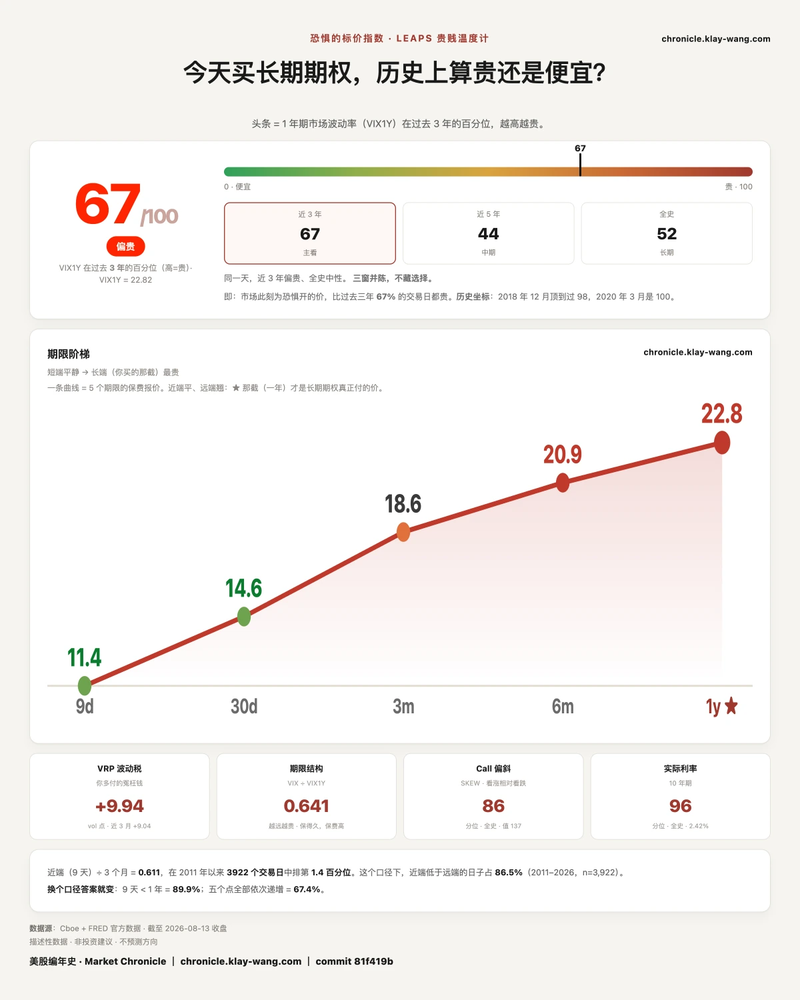

13 万张的重仓一夜归零，猜对答案也救不了它 · 8.10-8.14
⚡ 三行速览
- 两个交易日里，同一个指数上出现三组同样形状的远期合约，合计约 120 万张；今天这一组，比昨天两组加起来还大。
- 它的赔付有边界：跌到某一档最大，再往下反而缩小，跌穿最低那一档一分不赔。所以它买的不是崩盘。
- 同一天 SPY 收在历史新高，而恐惧的标价从 61.9 涨到 67.2，从 9 天到一年五档期限全部变贵。
这一期讲什么
第 1 节是主菜：两天里第三次出现的那组远期合约，花了多少钱、能赚多少、到底在买什么。
第 2 到第 4 节分别是：17 只票的一天拆成两段、闪迪、以及另一处同型结构。
第 5 节对账，第 6 节是每天的温度计。不着急的话，读完第 1 节和最后一节就有数了。

〔大盘 · 三张价目表〕两天里第三次，有人问同一个问题
PPI 日，市场情绪偏暖，SPY 收在历史新高：盘中最高 779.37、收盘 777.88，标普 500 盘中最高 7816.70。
（SPY 为盘中最高价口径，未含分红调整。）今天值得花时间的是另一件事。
08.12 那天，SPY 上出现两组形状完全一样的远期合约。08.13 又出现第三组，
而且这一组比前两组加起来还大。三组的规格是这样的：
| 建仓日 | 到期 | 三个价位 | 张数 | 主体距今天收盘 |
|---|---|---|---|---|
| 08.12 | 10.30 | 670 / 570 / 470 | 7.5 万 / 15 万 / 7.5 万 | −26.7% |
| 08.12 | 11.20 | 640 / 520 / 400 | 7.5 万 / 15 万 / 7.5 万 | −33.2% |
| 08.13 | 12.18 | 610 / 480 / 350 | 15 万 / 30 万 / 15 万 | −38.3% |
三组合计约 120 万张，形状完全一样：三个价位等距，中间那档的量正好等于两边之和。
而且它在按规则走：最上面那一档每次往下挪 30 点，价位间距随到期变远而变宽（100、120、130），
中间那档一档比一档深。同一形状连着三个到期日，宽度按时间放大，位置逐档下移，这不是临时起意。

普通的看跌合约跌得越狠赔得越多，这三组不是：以今天这组为例，赔付在 480 那一档最大，
跌穿 350 之后一分不赔，涨过 610 同样一分不赔。
所以它买的不是崩盘，是跌到某一档就停住。有人不是在问会不会跌，而是在问如果跌会停在哪儿，
为 −26.7%、−33.2%、−38.3% 三个位置分别付钱，同时放弃了跌得更深那一段的赔付。
如果你不盯盘，只看三个数就够。
昨天收盘 772.49，今天收盘 777.88（历史新高），今天盘中最高 779.37。
这三组合约赌的位置是 570、520、480。从今天的 777.88 跌到 570，等于现价砍掉四分之一还多；跌到 480，等于砍掉将近四成。
时间上，它们分别在 10.30、11.20、12.18 到期，也就是从今天算起的两个半月到四个月。
把这三件事连起来读：有人在指数创下历史最高的当天，为两个半月到四个月之后、跌掉四分之一到四成这件事付了钱，
而且明确放弃了跌得更狠时的赔付。 这不是一句情绪，是写在合约上、谁都能查的条件。
钱的量级是这样的：按当日收盘后的报价估算，三组的净支出合计约 4525 万美元，
而如果价格正好停在中间那一档，最大赔付合计约 36 亿美元。
这是收盘后报价的估算，不是成交价，只作量级参考；更重要的是，成交记录分不出买方卖方，如果这批人是卖方，那么收付方向完全相反，
变成收 4525 万、承担最高 36 亿的赔付义务。
今天这 60 万张，只用了 62 笔成交打完，
三个价位分别是 24 笔、21 笔、17 笔。不是很多人各买一点，是很少的几笔、每笔都很大。
把这一周放在一起看：指数创下有记录以来的最高点；30 年期国债拍出 2001 年以来最贵的融资成本；
而有人分三次，铺了三张跌到哪儿停住的价目表。 这三件事同一周发生，我们没有任何证据把它们连起来。
建没建起来有硬尺子。 08.12 那两组，今早持仓与前一天成交一比一对上、今天几乎零成交，钱是真进来的。
今天这组要等：12.18 三档进场持仓分别是 8307、11086、6917 张，明早跳到 15 万、30 万、15 万量级就是第三次坐实。
这类合约可以出现在很多种做法里，我们没有每条腿的成交价、没有配对的时间戳、也不知道对手方，
所以不写它是谁做的、也不写它想干什么。归因这一栏今天填的是：结构是系统性的，倾向于成立；动机与身份，无法归因。
可推翻条件：明天早上 12.18 那三档的持仓没有跟上今天的成交，那这一组就只是当天来回，不是新建的仓。

〔横截面 · 十七只〕昨天夜里定的价，今天白天自己走
昨天这一节讲的是十六只高开、十四只被卖回去。今天同一张表，形状整个反过来。
一只票的全天涨跌是两段拼的：开盘跳空那一段，是隔夜和盘前挂出来的价；
开盘之后那一段，是当天一笔一笔真实买卖出来的价。
今天的跳空段几乎是平的。17 只观察票里，跳空全部落在 1.64% 以内，向上最大的只有 0.65%，
而昨天最大的跳空是 6.86%。夜里那一段今天基本没有给出任何价格。
价格是白天走出来的：17 只里 13 只的盘中段为正，为负的只有字母表 C 类、亚马逊、SpaceX 三只。
同一天里，三只票给出了三种完全不同的涨法，正好可以当尺子用：
| 票 | 夜里（跳空） | 白天（盘中） | 全日 | 形状 |
|---|---|---|---|---|
| 奈飞 | +2.43% | +2.93% | +5.43% | 夜里定完价，白天继续有人接着买 |
| 闪迪 | −0.33% | +14.05% | +13.67% | 夜里几乎没定价，全靠白天买出来 |
| 超微电脑 | +1.78% | +2.30% | +4.12% | 盘中冲到 42.31，收在 39.16，冲高被卖回去一截 |
同样是涨，来源完全不同。只看全天涨跌幅，这三件事长得一模一样。
向上的真缺口，指的是当日最低价高于前一日最高价，
也就是这一天从头到尾没有一秒回到过昨天的价格区间。奈飞今天最低 75.44、昨天最高 74.67，
超微电脑最低 38.20、昨天最高 38.15，两只都成立。
这个定义比通行说法严得多，今天 35 只票里只有这两只满足。闪迪不在其中，它的涨是白天走出来的。
半导体今天全线在涨，英特尔 +3.58%、美光 +4.23%、闪迪 +13.67%，
而 AMD 的跳空、盘中、全日三个数分别是 +0.01%、0.00%、+0.02%，几乎完全不动。
同一天它宣布计划发行最高 50 亿美元的债券。两件事只是同一天发生，我们不猜其中有没有关系。
把两天并起来看，是一组完整的对称：
昨天，钱在夜里表态、白天反悔；今天，夜里几乎没有表态，白天自己走出来一个历史新高。
这也正是昨天第 2 节挂的那个作废条件：如果第二天盘中那一段普遍转正，那昨天的回落就只是开奖日当天的形状，不是延续的形状。
今天 13 只为正，条件成立。昨天那个形状，到今天为止只属于昨天那一天。
可推翻条件：明天跳空段重新拉开、盘中段转负，那今天这组对称就只是两天的巧合，不是节奏。

〔个股 · 闪迪〕涨了 13.67%，开盘那一下一分钱没给
今天涨得最多的是闪迪，收盘 1528.11，全天 +13.67%。但这个数字的来源很特别。
前一天收盘 1344.29，今天开盘 1339.83，跳空 −0.33%，几乎没有缺口，方向还是往下的。
也就是说，这 13.67% 里没有一分钱是隔夜给的，全部是开盘之后一笔一笔买出来的。
今天全宇宙 35 只里，真正留下缺口的只有两只，闪迪不在其中。
不盯盘的话，看四个数就行：昨天收盘 1344.29，今天开盘 1339.83，今天收盘 1528.11，盘中最高 1580.88。
第一个到第二个几乎没动，第二个到第三个是这一天的全部涨幅。开盘没给、白天自己走，说的就是这件事。
盘中的形状更集中。11:00 到 11:15 这一根 15 分钟里，价格从 1402.14 走到 1485.00，涨了 5.9%，
这一根的成交是 570549 股，而前面四根的平均在 23 万股上下。
日内最高 1580.88，相当于 +17.6%，收盘从峰值回吐约 3.3%，但守住了绝大部分。
量级背景要一起给，否则这个数会被读歪：闪迪收盘距 52 周最高 2354.39 还有 −35.1%，
而 52 周最低是 42.82。它的 13.67% 和指数的 0.70% 不是同一把尺子上的数。
期权那一侧有一个只有逐轮记录才看得到的时点。
08.21 到期的 1390 看涨，在 10:53 已经成交 532 张，当时持仓 363 张；11:20 再看，只多了 8 张；全天定格 564 张，持仓仍是 363。
那批钱在 11:00 那根大阳线之前就已经付完，之后这一档几乎没再换手。
能说的只有这些：有人在 1390 这个价位、在那个时点付了钱，之后正股走了 7%。
成交记录不显示这笔钱是谁付的、押哪一边，买入看涨和卖出看涨在记录里长得一模一样。
它也不足以推动行情：500 多张合约背后的对冲需求，相对 57 万股的成交微不足道。
判据留在明天早上：这一档的持仓如果跳到四位数，是新建的仓；如果不动，就只是换手。
全天的期权账：看涨侧权利金 1.777 亿美元，看跌侧 6820 万，约 2.6 比 1；看跌那侧也不小，
1600 看跌 2448 张、3010 万美元。看涨侧最值得看的不是最大的几档，而是 1455 与 1475 两个非标准价位：
进场持仓只有 22 张和 37 张，当天成交 690 张和 649 张。有人特意去够了两个别人没有仓位的价位。
为什么是今天。 闪迪当天开了投资者日，按公司口径给出 FY2028 到 FY2030 的目标：
毛利率约 80%、营业利润率约 75%、调整后自由现金流利润率约 50%，并称已与 8 家客户签了带承诺采购量的长期协议，
覆盖 FY2027 约一半、FY2028 约三分之二的出货量。
它的财年截至最接近 6 月 30 日的周五，所以 FY2028 到 FY2030 不是自然年，是从 2027 年 7 月起的三个财年，差了约一年。
存储是典型的周期生意：技术节点每切换一次就自动多出比特，供给一放量价格自己下来，毛利率在大幅区间里摆动。
公司讲的是反过来做：节点切换期主动减产，把技术红利从更多比特换成更高利润，
再用带承诺量的长期协议把随行就市的收入换成按合约结算的收入。
前者改变盈利，后者改变市场愿意给的倍数，后者贵得多。
于是有了一个可以逐季对账的钩子：一家做存储制造的公司说自己能长期做到 80% 毛利率，
那是芯片授权级别而不是制造级别的数字。这句话不需要谁评论，它每季度自己开奖，我们一季一季记。

〔横截面 · 另一处同型结构〕多只大盘股，同一个到期日，同一种合约
今天最少见的一处结构，不在任何一只票身上，而在几只票之间。
苹果、特斯拉、字母表、闪迪，在同一个到期日 08.21 上，同时出现了同一种合约：
行权价远高于现价的看跌合约，而这些价位此前几乎没有人持有。
今天这样的合约一共 35 档，横跨 11 只票，权利金合计约 3.57 亿美元。下面是其中最大的几档。
- 苹果收 305.26，335 看跌当天成交 10304 张，进入这一天时持仓 1452 张，权利金 3170 万美元
- 特斯拉收 339.96，430 看跌成交 3146 张、原持仓 271 张；450 看跌 2431 张、原持仓 216 张；
440 看跌 2534 张、原持仓 294 张；480 看跌 1074 张、原持仓 96 张。这一只票今天有 11 档同型合约，合计约 1.68 亿美元 - 字母表 A 类收 346.36，390 看跌成交 4414 张、原持仓 1933 张，权利金 1950 万美元
- 闪迪收 1528.11，1600 看跌成交 2448 张、原持仓 924 张，权利金 3010 万美元
这类合约可以出现在很多种做法里。我们没有每条腿的成交价、没有配对的时间戳、也不知道对手方，无法区分是哪一种。
所以这一节不写它是什么，只写它的形状：同一个到期日、多只大盘股、同一种结构、同一天集中出现。
这是一个横跨多只票的同型结构，不是某一只票的单点异动。归因这一栏，今天填的是无法归因。
条件写在合约上，谁都能查：这些价位要在 08.21 之前被走到，才谈得上兑现。
判据留在明天早上，看这些档位的持仓有没有涨到与今天成交量同一个量级。
〔对账 · 昨天立的字据〕两个作废条件，今天全部成立
昨天写下的两个作废条件，今天都成立了。
第一条，围栏。 昨天写的是：如果今天同样的围栏被冲破，那昨天那次就只是碰对，不是标对。
今天 SPY 盘中最高越过上沿 2.62 点、收盘仍在栏外 1.13 点，纳指 100 越出 4.20 点、收盘在栏外 2.31 点，
两个指数收盘都没回到栏内。条件成立，昨天那句市场提前标对了价，按我们自己的规矩降级为碰对。
第二条，两段拆解（第 2 节已对完）：17 只里 13 只盘中为正，昨天那个回落形状不延续。
先看昨天记下的那两组仓。 08.11 那天出现的两组远月看跌，08.13 早上已经结算完毕：
六个价位的持仓全部对上了当天的成交，10.30 到期的三档从 75000、150005、75001 张分别落到 75405、150506、75696 张，
11.20 到期的三档同样落定，而今天这六档几乎零成交。
钱是真进来的，进来之后就收工了，不是当天来回对倒。这两组仓覆盖 10 月底和 11 月中，赔付区间铺在 −13% 到 −39%。
通胀数据当天有人花钱把四季度的尾部区间铺好，24 小时之后，指数创下历史新高。
同一个市场、同一周、两种都要花钱的表达。远离现价的看跌合约对做市商的对冲推力极小，不能说它预示了什么。
还有一件昨天挂着的事今天闭合了。 SpaceX 的一个月保险贵过一年，这个形状我们跟了三天：
08.11 差 1.50，08.12 差 2.35，还在走宽；今天变成 −0.54，形状消失了。19 只里现在只剩博通一只仍是一个月贵过一年，且差距从 0.30 走宽到 0.78。
没能对上的也照说。 特斯拉 330 与 335 那两档、SpaceX 那四档，明天 08.14 到期。
今天这两张表里都没有 08.14 到期的行，我们拿不到它们今天的最新持仓，所以这一栏今天空着，结算数字等明天。

〔大盘 · 恐惧的标价〕新高这一天，保险全线涨价
今天的读数 67.2，卡面 67/100。昨天 61.9，前天 65.5。
昨天降了 3.6 分，今天涨回 5.3 分。一年期波动率 22.82，昨天 22.62。
昨天这一节挂了一个问题：长端在 61.9 这一步之后，是继续降还是停住。
今天的答案是第三种：既没继续降，也不是停住，是反过来涨了。
更值得看的是整条阶梯。9 天 11.37、一个月 14.63、3 个月 18.61、6 个月 20.93、一年 22.82，
越远越贵，是常态形状。但和昨天逐档比，五档全部上移，没有一档更便宜。
把这一节和第 1 节并起来读，今天这个市场的样子就出来了：
指数在同一天创下历史新高，而从最短端到一年期，卖保险的人把每一档的价格都调高了。
这不是一句情绪判断。给未来一年报价的那批人，报错了要自己付钱，他们把每一档都往上抬，说明他们算出来的成本变了。
它不告诉你明天涨跌。它告诉你，那批必须为未来一年报价、并且要为报错付钱的人，今天报了多少。
恐惧的标价指数（Fear-Price Index）· 2026-08-13 · 读数 67/100：一年期波动率 VIX1Y 为 22.82，处于近三年第 67 百分位，高即贵。逐日台账与口径 → chronicle.klay-wang.com · 转载注明：恐惧的标价指数 · Market Chronicle
今天值得带走的三句话
- 看到一堆看跌合约，先问赔付有没有边界。 有边界的那种，跌过头反而不赔，
它买的就不是崩盘而是某一档位；没有这一步，很容易把一笔有边界的下注读成末日预言。 - 判断写下来的时候，顺手把作废它的条件也写下来。 昨天那两句判断今天都被自己写下的条件推翻了，
能被推翻是因为当初写清楚了推翻的样子。没有作废条件的判断，事后总能解释成对的。 - 仓是不是真建起来了，看第二天早上的持仓，不看当天的成交量。 成交可以是同一批合约来回换手，
只有隔夜留下来的那部分才是有人真的扛着。
最后把明天要验的那件事写在这里，免得事后有解释的余地。
12.18 那三档进入今天时的持仓是 8307、11086、6917 张。如果明天早上跳到 15 万、30 万、15 万这个量级，
就是第三次坐实；如果没跟上，今天那一组就只是当天来回，不是新建的仓。
两种结果我们都写，写在明天这一期里。
除此之外，下一期回来对五件：今天那批远高于现价的看跌合约，35 档横跨 11 只票，持仓有没有跟上；
特斯拉 330 与 335、SpaceX 那四档，明天收盘正式收卷；闪迪 1390 看涨那一档是新建仓还是纯换手；
被冲破的这道围栏，明天能不能重新兜住；以及长端在 67.2 这一步之后，是接着往上还是回落。
本站不提供投资建议，不预测方向，不做择时。